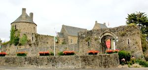
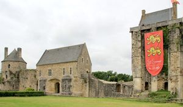
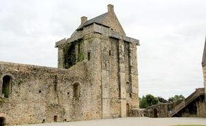
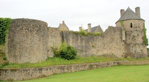
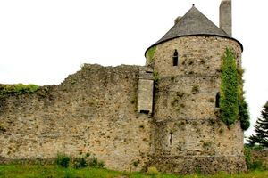
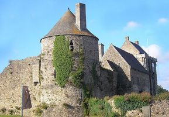

Recensement Jean-Claude Truffet
| Département | 50 — Manche |
| Canton | Bricquebec |
| Commune | Saint-Sauveur-le-Vicomte |
| Type d'édifice | Château |
| Période d'origine | XIII-XIX |
| Coordonnées GPS | 49° 23' 11" Nord, 1° 31' 41" Ouest |






Trois châteaux dans cet article le Beaulieu, le Lude et St-Sauveur le Vicomte. BEAULIEU, ancien château fort est de style médiéval. Le château de Beaulieu date des XIe et XIIe siècles. Il fut assiégé, deux fois, durant la Guerre de Cent Ans. Il subsiste l'enceinte fortifiée flanquée de tours et un donjon massif. Les ruines du château de Beaulieu ont été classées aux M.H. depuis 1840. Le LUDE, à Saint Sauveur le Vicomte, à été bâti en 1862 après l'incendie du précédent. C'est l'oeuvre des architectes cherbourgeois Geufroy et Drancey pour les Le Marois. Cette famille tient depuis le XIXe siècle une place éminente dans l'histoire du Cotentin. Ils commandèrent la construction d'édifices remarquables, tel l'hôtel de la rue Blanche en 1829, par l'architecte Pellechet, ou l'hôtel édifié par Henri Parent avenue d'Antin dans le quartier des Champs Elysées pour le sénateur Jules Polydor, comte Le Marois en 1865 et enfin le château de Pépinvast. Le château du Lude témoigne du retour de l'esprit gothique et renaissance. Les alentours de cette belle demeure sont délicieux; les jardins et le parc descendent presque jusqu'au bord de la Douve. Au loin on aperçoit les bois du Lude, puis la vallée. ST-SAUVEUR LE VICOMTE, est célèbre pour son château-fort qui entra véritablement dans l'histoire lors des guerres de Cent Ans. Le seigneur, à cette époque, était Geoffroy d'Harcourt qui se révéla d'abord partisan du roi de France, puis de l'Anglais. Après la mort de Geoffroy d'Harcourt, le roi de Navarre et les Anglais occupèrent la presqu'île du Cotentin jusqu'au traité de Brétigny, c'est-à-dire depuis 1356 jusqu'à 1360. Après ce traité, Edouard III disposa du domaine de Saint-Sauveur en faveur de Jean de Chandos, qui en prit possession en 1361.
ST-SAUVEUR LE VICOMTE, Jean de Stokes, lieutenant s'intitulait capitaine de Saint-Sauveur ; les fortifications furent augmentées, et on fit du château une place d'armes importante; une partie de l'abbaye fut même détruite parce qu'elle pouvait nuire à la défense de la place. Après la mort de Jean de Chandos, arrivée sans qu'il laissât d'héritiers, ses domaines en Normandie furent saisis par Edouard III, qui confia la garde de Saint-Sauveur à Guillaume de Latinier, lequel choisit pour lieutenant Thomas de Catteston. Les Anglais continuèrent d'occuper le château de Saint-Sauveur et le gardèrent jusqu'à l'année 1375; mais la garnison anglaise pillant et dévastant le pays, Charles V chargea Jean de Vienne, amiral de France, d'en faire le siège. Jean de Vienne vint au printemps de l'an 1375, mettre le siège devant Saint-Sauveur-le-Vicomte, avec tous les barons et chevaliers de Bretagne et de Normandie. La garnison, après un siège long et meurtrier, demanda à capituler; il fut convenu que si, dans un délai de six semaines, elle n'obtenait aucun secours du roi d'Angleterre, elle rendrait la place, et se retirerait sauf leurs corps et leurs biens. Le roi d'Angleterre n'ayant envoyé aucun secours, les capitaines anglais abandonnèrent la place et gagnèrent la mer à Carentan. Aujourd'hui, il ne reste qu'une enceinte fortifiée, flanquée de tours construit dans la première moitié du XIV siècle, dominée par un imposant donjon qui a servit de prison. Des travaux ont été entrepris visant à restaurer le donjon, la courtine nord et les remparts. Au rez-de-chaussée existe encore une très belle salle voûtée, soutenue par un pilier central. Au XVII un hospice est aménagé à l'intérieur du château. M.H. 1840.
Geoffroy d'Harcourt
"
Trois châteaux dans cet article le Beaulieu, le Lude et St-Sauveur le Vicomte. GPS : 49° 23' 11" Nord, 1° 31' 41" Ouest